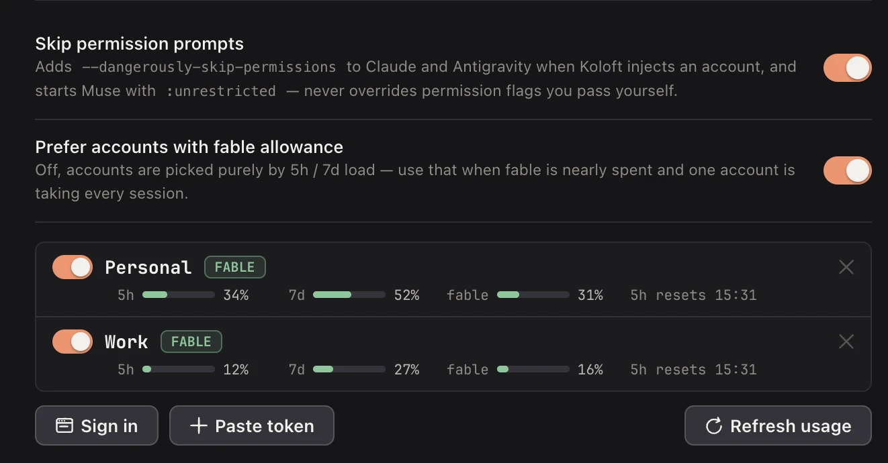
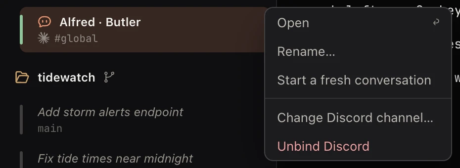

Several accounts, one pool
When several agents work at once, one subscription runs out fast. Then you stop, log out, log in to another one, and start again. Koloft keeps your accounts in one pool, and each new session starts on the one with the most room left.
Every session in Koloft runs on a Claude, Codex, Muse or Antigravity account you add here, never on the login this Mac already has. So the first time Koloft opens, it asks you to sign in to one of them (the welcome step "Sign in, and pick your Assist"). A Koloft you updated asks too, if no account was added yet. Sign in to Codex, Sign in to Muse and Antigravity's Sign in with Google install the tool first when this Mac has none: the dialog says so, and the same terminal tab runs the official installer, then signs in.

At the top sits Skip permission prompts, on at first. With it on, a Claude
Code, Muse or Antigravity session Koloft starts runs without asking for permission, here
or on a machine. A permission setting given to one launch (a scheduled job's, say) still
wins. A Codex session you start keeps Codex's own approval settings.
Claude
Add your subscription accounts in Settings ▸ Accounts. Sign in runs the official
claude setup-token for you in the background. You approve once in your
browser, and the token goes straight into the pool. Or paste a token you already have.
You can also add an API (application programming interface) key, or a custom endpoint: another server that speaks the same API. Koloft cannot read how much is left on those, so it uses them only when every subscription is out and none comes back within 30 minutes, or when you have none.
a new Claude session starts
|
v
any subscriptions? -- no ----+
| yes |
v |
any with room now, or |
back in 30 minutes? -- no ---+
| yes |
v v
the one with API key or
the most room custom endpoint
How it picks
- Koloft asks each account how much is left when it opens, as a session starts (a reading from the last 30 seconds is reused), when Settings opens, when the usage panel opens and its last reading is over 5 minutes old, and when you click Refresh usage
- with "Prefer accounts with fable allowance" on, an account that still has fable allowance wins first (fable is Claude's biggest model; some plans give it its own weekly budget)
- Claude sessions you open one after another spread over your accounts, instead of piling onto one (Codex sessions do not spread this way)
- if no account can be read, Koloft picks the next one in order
- a session that starts again (you click its row, restart it, or quit and reopen Koloft) stays on the account it ran on, whatever the agent. It moves to another account only when one of that account's limits (5 hours, 7 days) is past 95%, or that account is being told to wait (rate-limited). An API key or custom endpoint is not kept this way.
Good to know
- tokens and keys are kept in the macOS Keychain
-
the little bars at the bottom of the sidebar show how much room your Claude, Codex, Muse
and Antigravity (signed in with Google) accounts have left. Hover them for the
Account usagepanel: one part per tool, each with its accounts; Claude, Codex and Muse get a Pool row with two or more accounts -
with no account that can be used, the New session button is greyed out, and a line under
it says why (the same for Codex); a scheduled job does not start either. The line is one
of:
-
No Claude account yet — add one in Settings ▸ Accounts.when none is added -
No Claude account can be used — check Settings ▸ Accounts.when none of yours can be used -
"<account name>" is not signed in — sign in again in Settings ▸ Accounts.when one needs a fresh sign-in
-
Codex
Sign in to Codex runs codex login in a terminal tab. Each sign-in becomes its
own Codex home, a folder that holds that one login. The sign-in tab says
Codex sign in: <name> above the terminal, with a Cancel button. If this
Mac has no codex yet, the dialog says so and the same tab runs its official
installer first, then signs in. New Codex sessions start on the least-used Codex account,
and skip one that has hit its limit while another is free. Settings and the
Account usage panel show each account's use for each limit Codex reports
(such as 5 hours and a week), its credits, and the resets it has saved, like
62,500 credits · 3 resets saved, first expires 10-21 09:00.
An account that hit its limit shows WALLED in the panel. When it has a saved
reset, a Use a reset button is there too: say yes, and Koloft spends one
reset and reads the account's limits again.
Muse
Muse Code is Meta's agent. Sign in to Muse runs muse login in a
terminal tab; each sign-in becomes its own account, with its own sign-in folder. Your Muse
settings and trusted folders are shared by every account. Or Paste API key:
Koloft hands the key to muse, which keeps it in that account's folder. An
account signed in with Meta shows how much of its 5h and
7d allowance is used, in Settings and in the
Account usage panel; an API key account just says Signed in. New
Muse sessions pick their account the way Codex sessions do: the least-used one, taking
turns when none has been read.
Antigravity
Antigravity CLI (agy; CLI means command-line tool) is Google's agent, the one
that took over from Gemini CLI.
Sign in with Google runs agy in a terminal tab: you sign in,
pick a colour scheme, answer Google's Terms screen and type /exit. Each
account keeps its sign-in in its own folder, never in the login Keychain; your Antigravity
conversations, rules, plugins and MCP servers (boxes of tools an agent can call) are
shared by every account. Or Paste Gemini API key: the key goes into your
Keychain and is handed to agy when a session starts. An account signed in
with Google shows how much of its 5h and 7d allowance is used,
in Settings and in the Account usage panel. New Antigravity sessions take
turns between your accounts. The session runs in agy's full-screen mode, which does not
flicker, unless your own agy settings file names another mode. Switching to the other
mode, inline, in agy's /config only removes that setting, so it lasts until
the next launch.
Assist and your butler
Assist is Koloft's own AI. One of your accounts runs it. It does
small jobs for Koloft. Your butler, the AI you talk to, runs on the same agent, and works
whether the small jobs are on or off. Settings ▸ Assist has three rows:
Koloft Assist turns the small jobs on or off; Runs on picks the
agent, Claude, Codex, Muse or Antigravity, for the small jobs and for your butler;
Name is your butler's name.
The small jobs:
-
the short title of a Claude or Muse session that an agent starts with
koloft session new(see agents) - which docs the folded Workbench card lists
- which folder a session you ask for in ⌘P should start in (see find any session)
How they run:
- on Claude it uses Haiku, on Codex GPT-6 Luna, on Muse and Antigravity their default model, for the small jobs; each costs a tiny bit of that account's plan or API balance, far less than one cent
- with Koloft Assist off, the small jobs run without AI: a session an agent starts is named after the first line of its task, the card lists every doc the agent wrote, and ⌘P opens the folder picker
Your butler

Your butler is the AI you talk to in Koloft. It is called Alfred until you give it another name. It is one session, on the agent Settings ▸ Assist ▸ Runs on picks, and it runs on your Mac in a folder of its own, not in one of your projects. Tell it what you want and it reaches your sessions for you (see what it can do).
-
Its row,
Alfred · Butler, is the first row of the sessions list. Under the name is its Discord channel, ornot on Discord. Before Assist is set up, the row is grey and saysNot set up — click to start. -
Click the row to open it. Right-click it for
Open,Rename…,Start a fresh conversation, andBind Discord channel…(orChange Discord channel…andUnbind Discordonce it has one). -
Rename…(or Settings ▸ Assist ▸ Name) changes the name in its row, in the note's title and on Discord. Other sessions still reach it by every name it has had. - When the session tab you are looking at goes away (you close it, it exits, or it crashes), Koloft shows your butler, opening it if it was not open, once the butler is set up. Closing the butler's own tab does not open it again; Koloft shows the newest open tab.
- Like any session it goes to sleep after a quiet half hour, unless it has a Discord channel.
- You can also talk to it from your phone, once it has a Discord channel (see discord), and from ⌘P (see find any session).
What your butler can do
It works through the koloft command, like every session. In every folder of the sidebar, it can:
- list every session in every folder, open or closed, and list your folders
- start a session in a folder on this Mac, in a worktree of its own when the folder is a git repo; or start a helper in its own folder for a side job, which hangs under its row and reports back
- hear a session's reply: when it hands work to a session, or answers its question, Koloft passes that session's reply back to it the moment the turn ends
- read, message, resume and stop sessions, and run a slash command in them
- see their screen, answer their questions, and press keys in them as you would at the Mac: pick an option, move through a menu, approve, refuse or cancel
- close the sessions it started, open or ended, and, when you ask, any other session on your Mac that has ended
- read and add to its own note
- set up scheduled jobs in any folder, naming the folder each time
-
use GitHub with
koloft gh, naming the repository each time (see whatkoloft ghrefuses) - send you files and pictures of pages on Discord
It cannot:
- start a session in a remote folder
- close an open session it did not start (stop it first)
- close a session on another machine (Koloft cannot check what closing it there would lose)
It has no tool limits of its own: it follows your Skip permission prompts
setting like any session. It is told that work belonging to a project goes to that
project's sessions, and to ask you before deleting or undoing anything.
It reaches every kind of session the same way, with koloft session send,
answer and keys:
- Claude on your Mac gets a message at once, through its own message socket.
- Codex, here or on another machine, gets it in line, when Codex is ready.
- Muse and Antigravity get it typed in once their turn is over.
- A Claude session on another machine gets it typed in once its turn has ended; the butler is told it will be delivered then.
Git accounts
A session that pushes needs a git login too. Settings ▸ Accounts ▸ Git accounts lets you
add accounts for GitHub, GitHub Enterprise, GitLab, Bitbucket, Azure DevOps, Gitea /
Forgejo / Codeberg, or any other git server, and
pick one per repository. Every Claude Code and Codex session in a
folder with a pick pushes and fetches as that account; on GitHub and GitHub Enterprise,
gh (GitHub's command-line tool) runs as it too. Koloft never touches your own
git and gh setup: a folder with no pick, and every session in it, keeps using it.
Adding one
Click Add account and pick the host:
-
GitHub and GitHub Enterprise: Koloft shows a one-time code and opens the server's
sign-in page in your own browser (so Google, Apple or company sign-in work as they do
there). Type the code, approve, and the account shows up. Koloft runs the sign-in of the
ghthat comes with Koloft; there is no terminal tab. Or paste a token. - GitLab.com, Bitbucket, Gitea / Forgejo / Codeberg: sign in on the site in your browser; it sends you back to Koloft when you are done
-
your own GitLab, Azure DevOps, and a GitHub Enterprise whose address has a port number:
paste a token.
Create a tokenopens that server's token page and names the boxes to tick. Koloft checks the token and reads your username from it; on GitLab and GitHub Enterprise, a token that lacks a permission is turned down, and the message names the missing one - Other server: its address, your username there and a token, kept without checking
An account for this Mac is kept on this Mac only, in the Keychain like your other tokens.
An account for another machine stays on that machine (see
On another machine). Its row says how many folders use it;
their names show when you click Remove. Make default makes it the first
choice when a folder on that host picks one; Remove takes it off this Mac,
and its folders go back to your own setup. When the server turns its token down, the row
says NEEDS SIGN-IN AGAIN.
Picking one per folder
Hover a folder's branch sign: its git panel has an
Account part. Pick an account there, change it, or go back to your own setup.
- under it, the panel says what name and email your commits get. On GitHub.com, GitLab, Gitea and Bitbucket that is the account's own name and the email its server reports (a no-reply address on GitHub.com and Gitea); on GitHub Enterprise, Azure DevOps and other servers commits keep your own name and email
- when you add a folder, Koloft picks an account for it by itself in two cases: the folder's address or git setup names an account Koloft has, and that account can push there; or only one of your accounts (or your default) can push there
-
a folder already in the list only gets a suggestion, such as
The repository address names bob — use bob?with a Use bob button, orThis repository was used with alice, who is not in Koloft yet. Add alice?with an Add alice button. Click Not now and it does not ask again -
gh auth loginin a session in a picked GitHub folder says to manage the account in Koloft instead - a Codex session's sandbox (the box Codex works in) may reach the network in a picked folder, so it can push there. In another folder a session you start stays offline unless Settings ▸ Extensions ▸ "Let agents drive this Browser" is on (see agents)
-
a pick works when the folder's remote is an SSH address too (
git@github.com:…,ssh://…, or an ssh alias of your own): inside a Koloft session, git then goes over https with the picked account's token; your own git setup,~/.sshand the Keychain are left alone. An account added as Other server does not do this - a remote folder's Account part lists that machine's git accounts; see On another machine
On another machine
A remote folder's machine keeps git accounts of its own. Once a
remote folder is in the list, Settings ▸ Accounts ▸ Git accounts gets a
Machine row: This Mac, and each machine. Pick a machine and the
list, Add account, Make default and Remove are that
machine's. Your Mac's accounts never go to a machine, and a machine's never come to the
Mac. Once a machine has an account, its remote folder's
git panel gets the same Account part as
a local one, and a pick there works as above: git follows it, and for a GitHub or GitHub
Enterprise account gh, the issue and pull request counts, and
gh auth login do too. What differs:
- a token you paste goes over SSH to the machine, into a folder under your home that only you can read
- GitHub and GitHub Enterprise: the one-time code and the sign-in page still show on your Mac
- GitLab.com, Bitbucket, Gitea / Forgejo / Codeberg: you sign in on the site in your browser on the Mac, and what the sign-in tool (Git Credential Manager) saved is moved whole to the machine. If the machine has no sign-in tool, Koloft installs it there first when it can: on Linux or macOS that has curl or wget, not on a musl Linux such as Alpine. When it cannot, it asks you for a token. Bitbucket has no token path, so it cannot be added for such a machine
-
the machine needs git 2.13 or newer. With an older git, Koloft keeps no account and
says:
git on <machine> is 2.12.0; git accounts need git 2.13 or newer there. Update git on <machine>, then add the account again. - Koloft does not check on a machine whether an account can push to the folder's repository, so it picks or suggests one from the folder's address and git setup alone, and never warns that an organization blocks the push
Make a key(below) is for this Mac only; there is none for a machine
Servers that allow SSH only
Some GitLab and Gitea servers allow SSH only. Then the
git panel says
This server allows SSH only — bob has no SSH key on this Mac yet. with a
Make a key for bob button. Press it, and Koloft makes the key, shows it with
Copy key and Open SSH keys page, and Check again
tells you whether the server knows it yet. Pushes and fetches in that folder then use that
key.
Your own accounts
The pool is for your own accounts. Please check that the way you use them fits Anthropic's, OpenAI's, Meta's and Google's terms. That is between you and them.
Next page → Remote folders